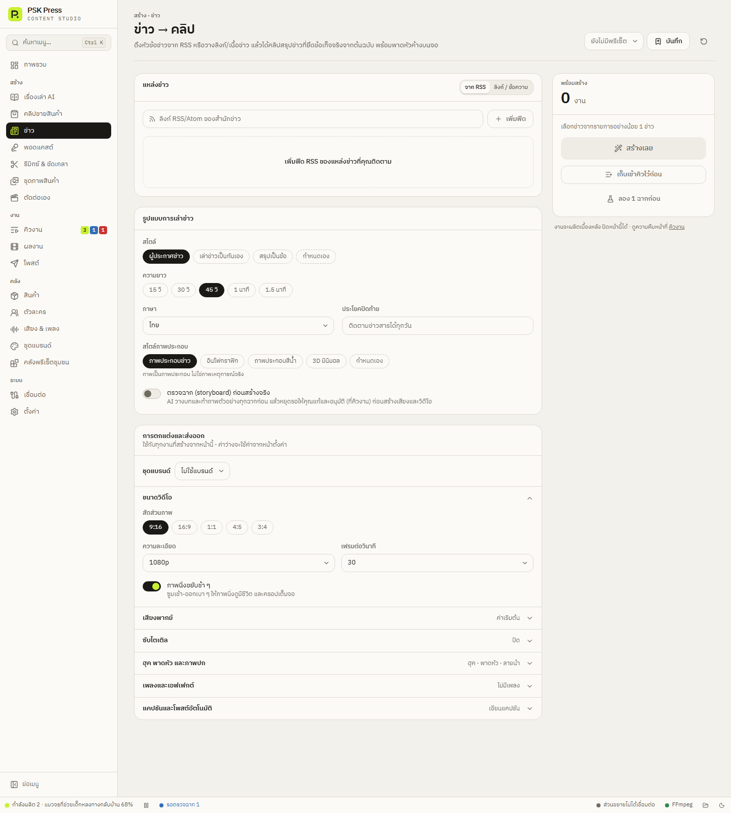

สร้างงาน
ข่าว
ดึงหัวข้อข่าวจาก RSS หรือวางลิงก์/เนื้อข่าว แล้วได้คลิปสรุปข่าวพร้อมภาพประกอบ เสียงผู้ประกาศ และพาดหัวค้างบนจอ


1. แหล่งข่าว
จาก RSS (ค่าเริ่มต้น)
- วางลิงก์ RSS/Atom ของสำนักข่าวในช่อง แล้วกด เพิ่มฟีด เพิ่มได้หลายฟีด และลบฟีดได้ที่ปุ่มบนชิปของฟีด
- กด โหลดข่าวล่าสุด แอปจะแสดงหัวข้อข่าวล่าสุดจากทุกฟีด
- ติ๊กข่าวที่ต้องการ ข่าวละ 1 คลิป บรรทัด “เลือกแล้ว N ข่าว” มีปุ่ม ล้าง
ลิงก์ / ข้อความ
- ลิงก์ข่าว — วางได้หลายลิงก์ คั่นด้วยบรรทัดใหม่ ลิงก์ละ 1 คลิป แอปดึงเฉพาะเนื้อข่าวจากหน้าเว็บ ถ้าดึงไม่ได้จะใช้สรุปจากฟีดแทน
- หรือวางเนื้อข่าวเอง — ใส่พาดหัวข่าวและเนื้อหาข่าว
2. รูปแบบการเล่าข่าว
- สไตล์ — ผู้ประกาศข่าว (ค่าเริ่มต้น), เล่าข่าวเป็นกันเอง, สรุปเป็นข้อ
- ความยาว (ค่าเริ่มต้น 45 วิ) และ ภาษา
- ประโยคปิดท้าย — เช่น “ติดตามข่าวสารได้ทุกวัน”
- สไตล์ภาพประกอบ — ภาพประกอบข่าว, อินโฟกราฟิก, ภาพประกอบสีน้ำ, 3D มินิมอล
- ตรวจฉาก (storyboard) ก่อนสร้างจริง
ข่าวต้องถูกต้อง
AI ได้รับคำสั่งให้ใช้เฉพาะข้อเท็จจริงในบทความ ห้ามแต่งตัวเลข ชื่อ หรือคำพูดขึ้นเอง ภาพเป็นภาพประกอบ ไม่ใช่ภาพเหตุการณ์จริง และไม่วาดหน้าบุคคลจริง แต่ AI ยังผิดพลาดได้ ควรเปิดตรวจฉากแล้วอ่านบทก่อนเผยแพร่ทุกครั้ง แก้ข้อความสั่งได้ที่ พรอมต์ระบบ → “บทบาท AI: ข่าว”
หน้านี้เปิด พาดหัวค้างด้านบน ไว้เป็นค่าเริ่มต้นในส่วนการตกแต่ง ดู การตกแต่งและส่งออก